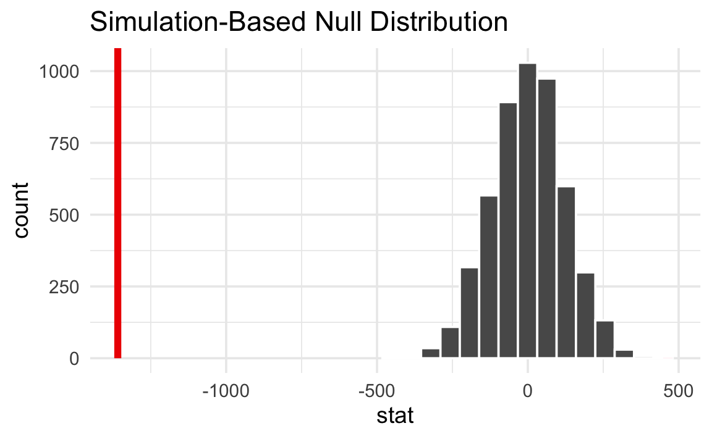
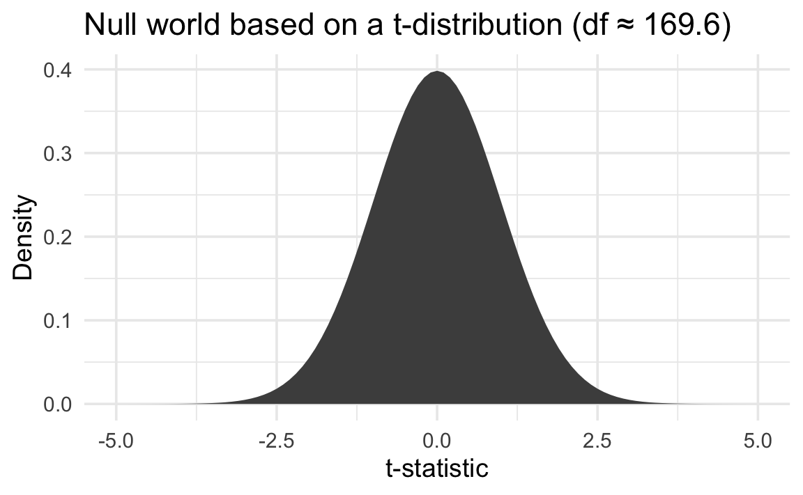
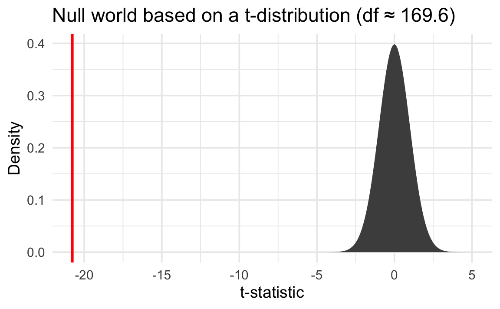

jstat = require("jstat@1.9.6")
clrs = ({
gold: "#f3d567",
orange: "#ee9b43",
coral: "#e74b47",
crimson: "#b80422",
navy: "#172767",
teal: "#19798b",
gray: "#4d4d4d"
})
function statLabel(value, textFn, dy, nullValues) {
const extent = d3.extent([...nullValues, value]);
const range = extent[1] - extent[0];
const pos = range === 0 ? 0.5 :
(value - extent[0]) / range;
const textAnchor = pos > 0.82 ? "end" :
pos < 0.18 ? "start" : "middle";
const dx = textAnchor === "end" ? -10 :
textAnchor === "start" ? 10 : 0;
const common = {
x: d => d, frameAnchor: "top", dy, dx,
text: textFn,
fontWeight: "bold", fontSize: 14,
textAnchor, paintOrder: "stroke"
};
return [
Plot.text([value], {
...common,
stroke: "white", strokeWidth: 4, fill: "black"
})
];
}Difference in means
Difference in means
◎◉○
Live simulation
The sample statistic (δ) is the difference in means between the two groups.
The difference in means is .
We create a null distribution by shuffling (or “permuting” to use the official stats term) the group labels. This simulates a world where all the real, measured values are still the same, but where group assignment doesn’t matter. This eliminates all differences between the groups.
Think of this as being a world where there are no differences between the two groups. Importantly, this doesn’t mean that the measured difference between the groups is exactly 0. There is variation in the data, and that variation is reflected in the null world. What it means is that in the null world, the difference between the two groups is 0 ± some amount.
Here’s what one shuffle looks like. Notice that the outcome values stay the same—only the group labels get reassigned:
Original data
Shuffled data
When we do this shuffle hundreds of times and compute the difference in means each time, we get a null distribution—a picture of what differences look like in a world where groups don’t matter.
Here’s what this null world looks like:
Next we put δ inside that null world and see how comfortably it fits there.
Is it surprising to see the red line in this null world? Is the line way out to one of the sides, or is it near the middle with the rest of the null world?
We can actually quantify the probability of seeing that red line in a null world. This is a p-value—the probability of seeing a δ at least that extreme in a world where there’s no difference between the group averages.
The p-value is
Finally, we have to decide if the p-value meets an evidentiary standard or threshold that would provide us with enough evidence that we aren’t in the null world (or, in more statsy terms, enough evidence to reject the null hypothesis).
There are lots of possible thresholds. By convention, most people use a threshold (often shortened to \(\alpha\)) of 0.05, or 5%. But that’s not required! You could have a lower standard with an \(\alpha\) of 0.1 (10%), or a higher standard with an \(\alpha\) of 0.01 (1%).
Evidentiary standards
When thinking about p-values and thresholds, I like to imagine myself as a judge or a member of a jury. Many legal systems around the world have formal evidentiary thresholds or standards of proof. If prosecutors provide evidence that meets a threshold (i.e. goes beyond a reasonable doubt, or shows evidence on a balance of probabilities), the judge or jury can rule guilty. If there’s not enough evidence to clear the standard or threshold, the judge or jury has to rule not guilty.
With p-values:
- If the probability of seeing an effect or difference (or δ) in a null world is less than 5% (or whatever the threshold is), we rule it statistically significant and say that the difference does not fit in that world. We’re pretty confident that it’s not zero.
- If the p-value is larger than the threshold, we do not have enough evidence to claim that δ doesn’t come from a world of where there’s no difference. We don’t know if it’s not zero.
Importantly, if the difference is not significant, that does not mean that there is no difference. It just means that we can’t detect one if there is. If a prosecutor doesn’t provide sufficient evidence to clear a standard or threshold, it does not mean that the defendant didn’t do whatever they’re charged with†—it means that the judge or jury can’t detect guilt.
NoteDifferent evidentiary standards
Many legal systems have different levels of evidentiary standards:
- Standards of proof in most common law systems (juries):
- Balance of probabilities (civil cases)
- Beyond a reasonable doubt (criminal cases)
- Evidentiary thresholds in the United States (juries):
- Preponderance of the evidence (civil cases)
- Clear and convincing evidence (more important civil cases)
- Beyond a reasonable doubt (criminal cases)
- Standards of proof in China (judges):
- 高度盖然性 [gāo dù gài rán xìng] / highly probable (civil cases)
- 证据确实充分 [zhèng jù què shí chōng fēn] / facts being clear and evidence being sufficient | the evidence is definite and sufficient (criminal cases)
- Levels of doubt in Sharia systems (judges):
- غلبة الظن [ghalabat al-zann] / preponderance of assumption (ta’zir cases and family matters)
- اليقين [yaqin] / certainty (hudud/qisas cases)
- Standard of proof in the International Criminal Court (judges):
- Beyond reasonable doubt (genocide, crimes against humanity, or war crimes)
Differences in penguin weights
For this example, we’ll look at the body mass of penguins near Palmer Station, Antarctica. At first glance, it looks like there are some definite species-based differences in average penguin weight:
| Species | Average weight (g) |
|---|---|
| Adelie | 3706 |
| Chinstrap | 3733 |
| Gentoo | 5092 |

Let’s look specifically at the difference in the average body mass for just Chinstrap and Gentoo penguins. First, we’ll load some packages:
library(tidyverse)
library(infer)
library(parameters)
penguins <- penguins |> drop_na(sex)With some filtering, grouping, and summarizing, we can find the difference in means and see that Chinstraps seem to be a lot lighter than Gentoos, on average:
penguins |>
filter(species %in% c("Chinstrap", "Gentoo")) |>
group_by(species) |>
summarize(avg_weight = mean(body_mass)) |>
mutate(difference = c(NA, avg_weight[1] - avg_weight[2]))# A tibble: 2 × 3
species avg_weight difference
<fct> <dbl> <dbl>
1 Chinstrap 3733. NA
2 Gentoo 5092. -1359.But is that difference real? Could it potentially be zero? We need to do some hypothesis testing.
Null hypothesis inference with {infer}
The sample statistic we’re interested in is the difference in means between Chinstrap and Gentoo penguins.
To find this, we’ll filter the data to only keep those two species, use specify() to define the response and explanatory variables we’re using, and use calculate() to calculate the difference in means:
delta <- penguins |>
filter(species %in% c("Chinstrap", "Gentoo")) |>
specify(body_mass ~ species) |>
calculate(stat = "diff in means", order = c("Chinstrap", "Gentoo"))
deltaResponse: body_mass (numeric)
Explanatory: species (factor)
# A tibble: 1 × 1
stat
<dbl>
1 -1359.The difference in means between Chinstraps and Gentoos is −1,359 grams.
We create a null distribution by shuffling (or “permuting” to use the official stats term) the species label. This simulates a world where all the penguin weights are still the same, but where species assignment doesn’t matter. This eliminates all differences between the species.
shuffled_data <- penguins |>
filter(species %in% c("Chinstrap", "Gentoo")) |>
specify(body_mass ~ species) |>
hypothesize(null = "independence") |>
generate(reps = 5000, type = "permute")
shuffled_dataResponse: body_mass (numeric)
Explanatory: species (factor)
Null Hypothesis: independence
# A tibble: 935,000 × 3
# Groups: replicate [5,000]
body_mass species replicate
<dbl> <fct> <int>
1 4700 Gentoo 1
2 3300 Gentoo 1
3 5650 Gentoo 1
4 4875 Gentoo 1
5 4450 Gentoo 1
6 4375 Gentoo 1
7 4625 Gentoo 1
8 5050 Gentoo 1
9 5500 Gentoo 1
10 4925 Gentoo 1
# ℹ 934,990 more rowsThe resulting data frame has 935,000 rows! That’s because we made 5,000 versions of the original data for 187 Chinstrap and Gentoo penguins.
Next we need to calculate the \(\delta\) in each of these 5,000 worlds:
null_world <- shuffled_data |>
calculate(stat = "diff in means", order = c("Chinstrap", "Gentoo"))
null_worldResponse: body_mass (numeric)
Explanatory: species (factor)
Null Hypothesis: independence
# A tibble: 5,000 × 2
replicate stat
<int> <dbl>
1 1 -37.5
2 2 152.
3 3 -85.5
4 4 -9.19
5 5 112.
6 6 -127.
7 7 136.
8 8 -244.
9 9 -225.
10 10 -185.
# ℹ 4,990 more rowsThe distribution of all these differences in means across the different simulated datasets creates a null world, or null distribution. Here’s what this null world looks like:
null_world |>
visualize()
Importantly, notice that the difference between species is not exactly 0. There is variation in the actual data, and that variation is reflected in the null world. In a world where there is no difference between the species, the difference is 0 ± some amount. In this case, it’s 0 ± ≈250ish grams.
Next we put \(\delta\) inside that null world to see how comfortably it fits there.
null_world |>
visualize() +
shade_p_value(obs_stat = delta, direction = NULL)
That’s way far to the right and doesn’t look likely at all. A difference of −1,359 g is really unlikely in a world where there’s no difference between the species.
We can actually quantify the probability of seeing that red line in a null world. This is a p-value—the probability of seeing a \(\delta\) at least that extreme in a world where there’s no difference between the species averages.
null_world |>
visualize() +
shade_p_value(obs_stat = delta, direction = "two-sided")
p_value <- null_world |>
get_p_value(obs_stat = delta, direction = "two-sided")Warning: Please be cautious in reporting a p-value of 0. This result is an approximation based on the number of `reps` chosen in the `generate()` step.
ℹ See `get_p_value()` (`?infer::get_p_value()`) for more information.p_value# A tibble: 1 × 1
p_value
<dbl>
1 0The p-value is < 0.001. (It’s so tiny that get_p_value() reports it as 0, along with an ominous warning. Technically it’s not zero—it’s just really really tiny.)
This means that in a world where there is no difference between the groups, there is a < 0.1% chance of seeing a difference of at least −1,359.
Finally, we have to decide if the p-value meets an evidentiary standard or threshold that would provide us with enough evidence that we aren’t in the null world (or, in more statsy terms, enough evidence to reject the null hypothesis).
There are lots of possible thresholds. By convention, most people use a threshold (often shortened to \(\alpha\)) of 0.05, or 5%. But that’s not required! You could have a lower standard with an \(\alpha\) of 0.1 (10%), or a higher standard with an \(\alpha\) of 0.01 (1%). In this case, we’ll assume an \(\alpha\) of 0.05.
In this case, the p-value is < 0.001 and our threshold for \(\alpha\) is 0.05.
In a world where there is no difference between the two species, the probability of seeing a difference as extreme as −1,359 is < 0.1%.
Since < 0.001 is less than 0.05, we have enough evidence to say that the difference is statistically significant.
null_world |>
visualize() +
shade_p_value(obs_stat = delta, direction = "two-sided")
Null hypothesis inference with t.test()
In practice, most people do not simulate null worlds. Instead, they’ll use a built-in test that uses a known theoretical distribution of what the null world is assumed to look like (like the t, F, and \(\chi^2\) distributions), and calculate a p-value based on that null distribution. This theoretical, mathematical p-value is what you see in regular statistical output.
Even though these values are not based on simulations, the intuition is the same: a p-value is still the probability of seeing a \(\delta\) at least that extreme in a world where there is no difference.
To find the difference in group means, we can conduct a t-test with t.test():
t.test(
body_mass ~ species,
data = filter(penguins, species %in% c("Chinstrap", "Gentoo"))
)
Welch Two Sample t-test
data: body_mass by species
t = -20.765, df = 169.62, p-value < 2.2e-16
alternative hypothesis: true difference in means between group Chinstrap and group Gentoo is not equal to 0
95 percent confidence interval:
-1488.578 -1230.120
sample estimates:
mean in group Chinstrap mean in group Gentoo
3733.088 5092.437 Buried in that giant wall of text is the p-value: p < 2.2e-16, or p < 2.2 × 10−16. That’s really tiny. In a world where Chinstrap and Gentoo penguins had the same average body mass, it would be virtually impossible to see a difference as extreme as −1,359. We have enough evidence to declare that difference is statistically significant.
If you don’t like all that text output, you can feed the results of t.test() to the model_parameters() function from the {parameters} package. This creates a nice little table with the different group means, the difference, the confidence interval, and the p-value. Feed that into display() and you’ll get a nicely rendered table.
t.test(
body_mass ~ species,
data = filter(penguins, species %in% c("Chinstrap", "Gentoo"))
) |>
model_parameters() |>
display(caption = "")| Parameter | Group | species = Chinstrap | species = Gentoo | Difference | 95% CI | t(169.62) | p |
|---|---|---|---|---|---|---|---|
| Alternative hypothesis: true difference in means between group Chinstrap and group Gentoo is not equal to 0 | |||||||
| body_mass | species | 3733.09 | 5092.44 | -1359.35 | (-1488.58, -1230.12) | -20.76 | < .001 |
WarningSide caveat: Different “flavors” of tests
Since we’re not simulating the null world, we’re making strong assumptions about what the null world looks like. In the case of this t-test, we’re assuming it follows a t-distribution with 169.6 degrees of freedom. That looks like this:

We can then put a standardized version of our observed \(\delta\)—the t value of -20.8—in that mathematical null world and find the exact probability of seeing it there:

We can only assume that this precise t-distribution represents a null world under certain conditions. This is why there are so many statistical test flowcharts—you have to make sure you choose the test that matches the conditions and characteristics of your data.
For example, different versions of the t-test make different assumptions about whether the two groups have equal variances. By default, R uses Welch’s t-test, which is designed for group means with unequal variances, while the Student t-test assumes that group means have equal variances. Technically, in order to check which flavor of t-test we need to run, we’d need to test for equality of variances, which involves a separate statistical test with its own null hypothesis. If the variances are equal, we’d use t.test(..., var.equal = TRUE); if the variances are unequal, we’d use t.test(..., var.equal = FALSE). The only way to remember all these assumption checks and all the different versions of statistical tests is to consult a flowchart. It can be miserable.
If you simulate, you can skip all that. Your null world is based on the qualities of your observed data, not an idealized mathematical distribution.
Footnotes
Kind of—in common law systems, defendants are presumed innocent until proven guilty, so if there’s not enough evidence to prove guilt, they are innocent by definition. ↩︎